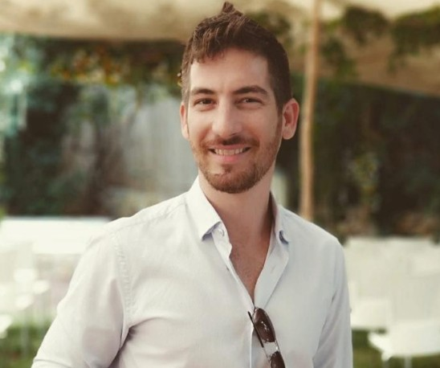

Delivering clarity through complexity – On time. On scope. On budget.
Project Manager | Technical Platform Owner | Tech Strategy
Led product development cycles using Agile methodologies, with a strong emphasis on MVP definition, iterative delivery, and KPI-driven execution. Promoted a culture of continuous improvement and close collaboration across internal stakeholders.
Led strategic architecture planning initiatives and cross-functional thinking groups. Designed hybrid infrastructures that seamlessly integrated cloud-native AWS services with on-premise systems, enabling scalability, security, and cost-efficiency for enterprise-grade platforms.
Collaborated with external vendors operating under fixed-scope models by providing structured and fully defined business specifications. Ensured integration success by aligning deliverables with internal development pipelines and business goals.
Implemented strategies to balance ongoing system maintenance with new feature delivery. Championed proactive planning and resource allocation that minimized technical debt while ensuring continuous progress on product goals. Fostered a culture that values both system reliability and innovation through effective prioritization frameworks and clear stakeholder communication.
Led the design and implementation of an AI-based internal platform that automated repetitive tasks and resulted in a 5% workforce efficiency improvement within the first year. The solution leveraged scalable microservices and integrated seamlessly into legacy systems.
Directed the development and delivery of a mission-critical client-server platform, built to support scalable operations and complex business workflows. Oversaw system design, interface architecture, and API orchestration while leading a cross-functional team of engineers, analysts, and QA. Delivered a robust and high-performance solution aligned with both business and technical KPIs.
Orchestrated a complete sunsetting process of outdated systems by introducing a service reuse model. Reduced operational complexity and improved maintainability while ensuring business continuity during transition phases.
📞 +972 54 8033190
📧 Erez10Nir@gmail.com